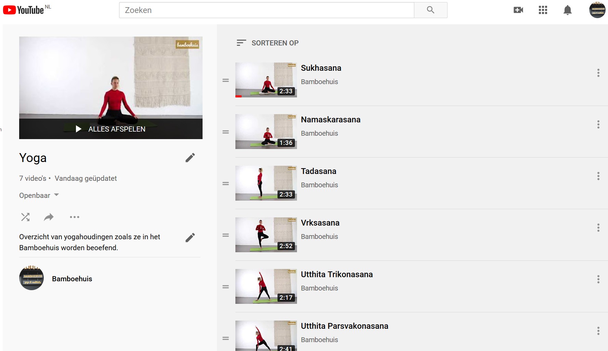

Ben je een keer niet in de gelegenheid om naar de yogales te komen of is het bamboehuis gesloten en heb je zin om toch aan de slag te gaan, dan is het tijd voor zelfstudie. Op deze pagina staan tips, informatie en verwijzingen voor het doen van yoga houdingen, meditatie oefeningen en filosofie.
Maar vergeet niet, iedere situatie is er eentje om van te leren. Ieder moment kan je een stap verder brengen in je ontwikkeling. Probeer je hiervan bewust te worden en overal aandacht voor te hebben. Wat kun je ieder moment doen?
Observeer je ademhaling voor een paar tellen. Die gaat vanzelf, lucht stroomt in en lucht stroomt uit. Zo breng je je aandacht tot rust.
Doe een stapje terug, wacht met reageren op je zintuigen, maar observeer de situatie en wat die met jou doet. Zo breng je de aandacht naar het moment.
Onderneem nu de actie die nodig is, voel wat er van binnenuit ontstaat.
Zo word je meer bewust en verminder je gedachten.
YOGA
VIDEO'S
Van iedere yogahouding is een video gemaakt, bekijk ze allemaal. Oefen een houding waar je beter in wilt worden of speel ze achter elkaar af om een workout voor jezelf te maken.
 Yoga playlist vanaf 10 mei 2020 Dit is een overzicht van alle yogahoudingen
De playlist wordt wekelijks aangevuld
AUDIO
Ter afsluiting van je yoga oefening kun je luisteren naar een begeleide savasana.
In de pdf hieronder staat een overzicht van de yogahoudingen die gegeven zijn in de introductie lessen en het eerste blok van de zelfrealisatie lessen. Deze houdingen komen ook terug in de basis en gevorderde yoga lessen. In deze pdf staan 3 series van yoga houdingen.
Op ons blog boe.nl schrijven wij verhalen over de thema's die in het bamboehuis centraal staan. Er staan verhalen zoals 'stoppen met denken' en 'zien zoals het is'. Lees daar de verhalen die je aanspreken, die zullen aansluiten op wat je in de lessen en je eigen meditatie meekrijgt.
RECENTE BLOGS
Vrijheid juni 2020
Pluk de dag maart 2020
De eenvoud van yoga maart 2020
Ben je geïnteresseerd in de achterliggende theorie en wil je meer weten, lees dan één van de boeken in de leeslijst. Dit is een overzicht van de boeken waarop de lessen in het Bamboehuis gebaseerd zijn.
Anapana, de concentratie oefening die je in het bamboehuis hebt geleerd kun je ieder moment doen. Zoek voor je zelf een rustige plek waar je in stilte 10 tot 15 minuten kunt zitten. Maak het jezelf comfortabel in je houding. Bedenk van te voren hoe lang je wilt gaat zitten en zet een wekkertje op die tijd.
Als je je ogen sluit begin je met het tot rust brengen van je gedachten. Breng daarvoor je aandacht een paar tellen naar je ademhaling. De lucht stroomt in en de lucht stroomt uit. En breng vervolgens je aandacht naar een yama of nyama die je hebt geleerd. Gebruik bijvoorbeeld de nyama 'zelfstudie' en realiseer dat je aan je persoonlijke ontwikkeling werkt. Je kunt vervolgens een wens doen voor wat je wilt bereiken met deze meditatie, voor jezelf en voor anderen. Als je wilt kun je je voorstellen dat je in het bamboehuis zit en je afstemmen op de energie die daar aanwezig is.
Daarna begint de concentratie oefening.
Aandachtig zijn (awareness) op één punt en tegelijkertijd gelijkmoedig blijven (equanimity)
Kies als concentratie object je neus en observeer het in- en uitgaan van de adem
Zonder daarbij de ademhaling te sturen
Iedere sensatie in het gebied rond je neus observeer je (een prikkeling, jeuk, koude lucht, warme lucht). Je herkent de sensatie, maar je vindt er niets van.
Wordt je afgeleidt door je zintuigen, een gedachte, je lichaam. Herken dat dan en kom weer terug naar je concentratie object. Zonder oordeel en zonder reactie
AUDIO
Beluister de introductie tot anapana.
Beluister 10 minuten geleide anapana voor beginners.
VIDEO'S
Bekijk hieronder een drieluik van video's over het waarom van meditatie. Het drieluik bestaat uit:
Het zien wat er vooraf gaat aan meditatie. Zoals gedachten die je gevangen houden.
Het zien wat werkelijke meditatie is. Tot rust komen en het ontstaan van gedachten zien. Werken aan je persoonlijke ontwikkeling en een intuïtief leven leiden.
Zien wat er voorbij meditatie is. Door een intuïtief leven verruimt je bewustzijn en ga je jezelf als onderdeel van een groter geheel zien. Je bent onderdeel van het leven, je bent het leven.
Deel 1: Ontdek jezelf 13 april 2020 Bekijk de bijbehorende pdf.
Deel 2: Verbeter jezelf 20 april 2020 Bekijk de bijbehorende pdf.
Deel 3: Verbeter je relatie met anderen 27 april 2020 Bekijk de bijbehorende pdf.